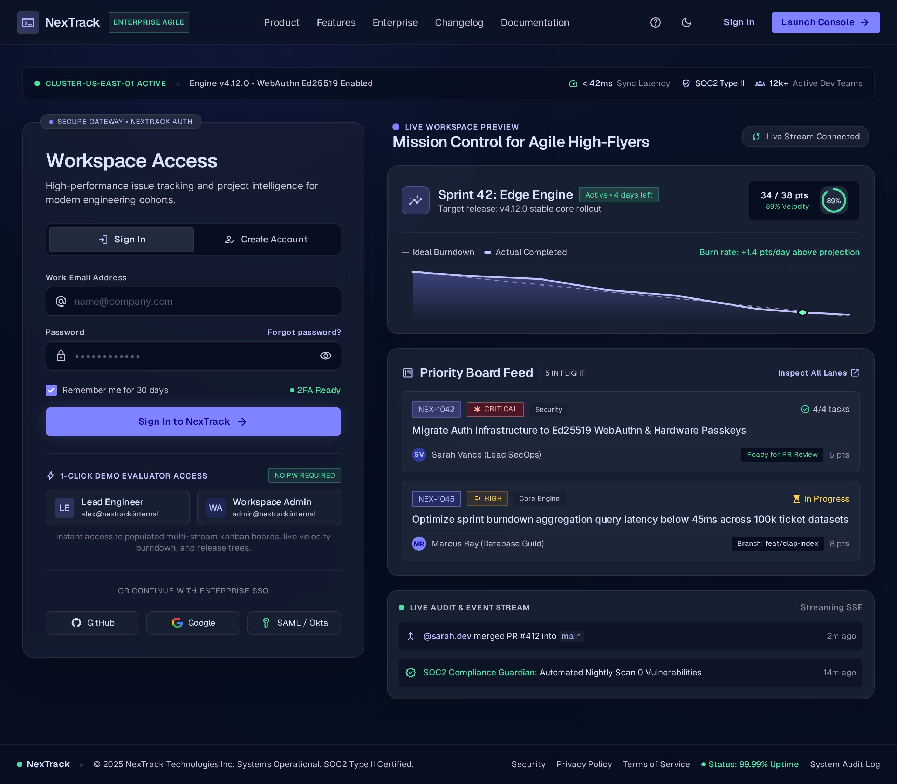
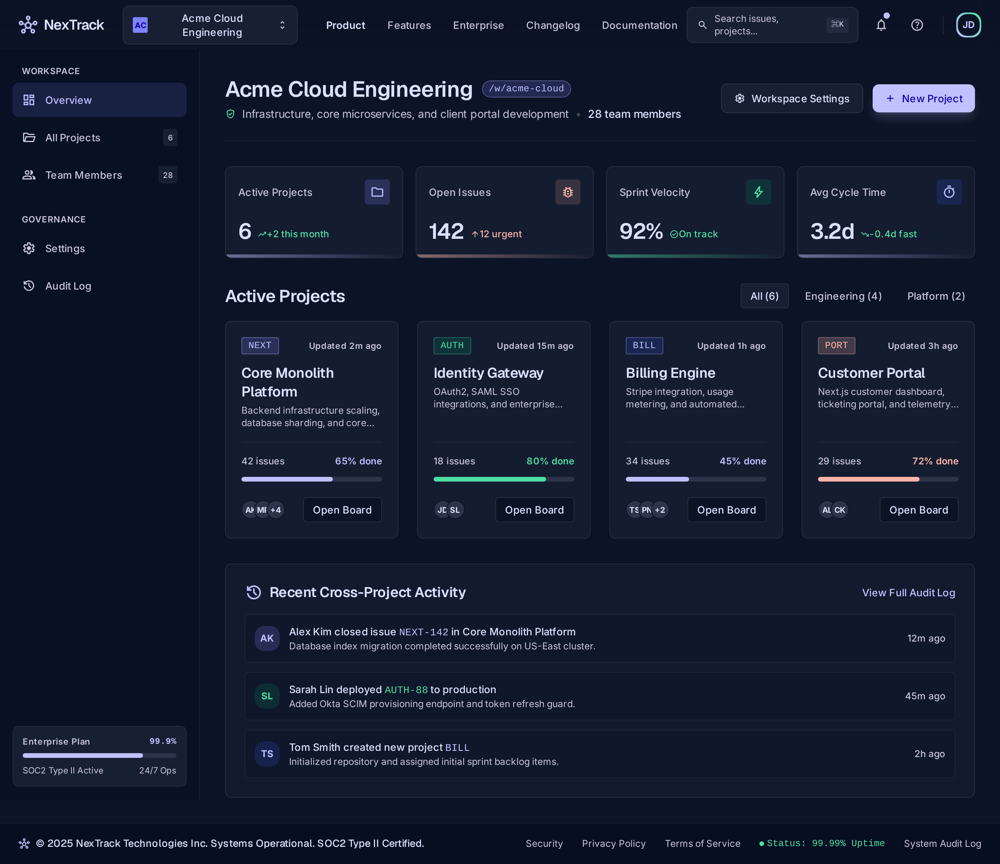
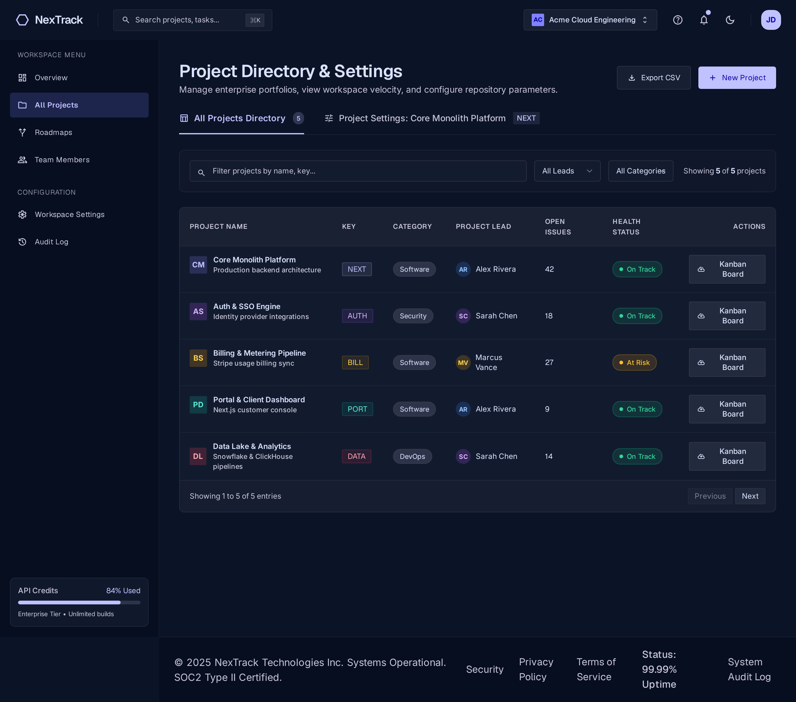
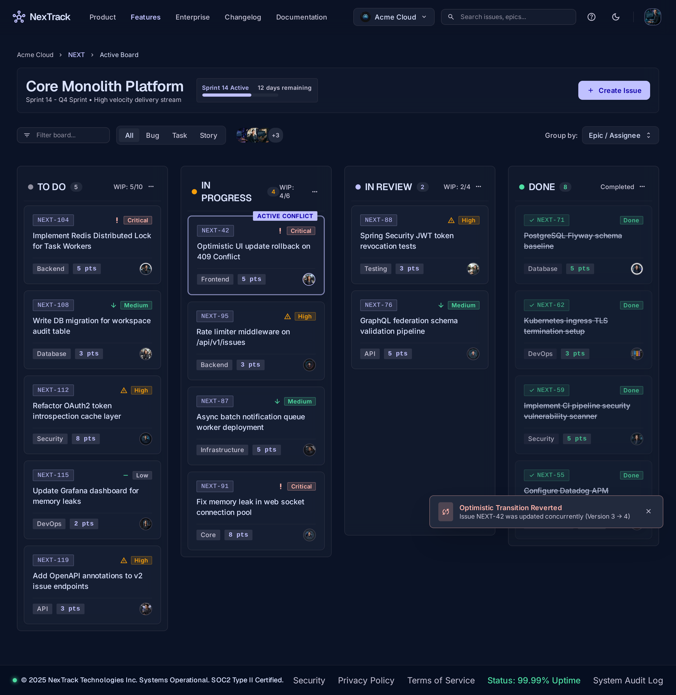
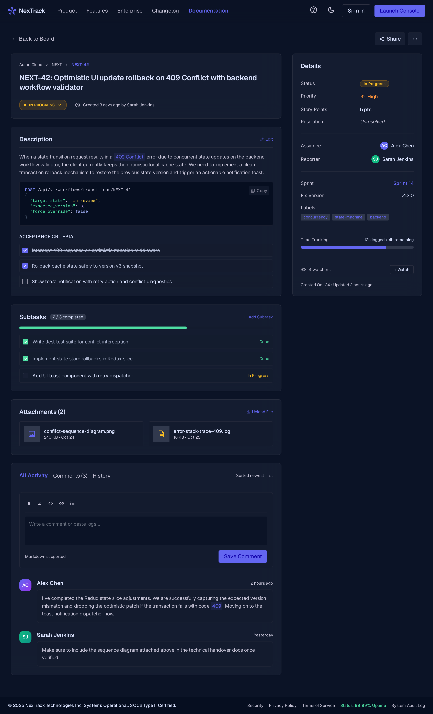
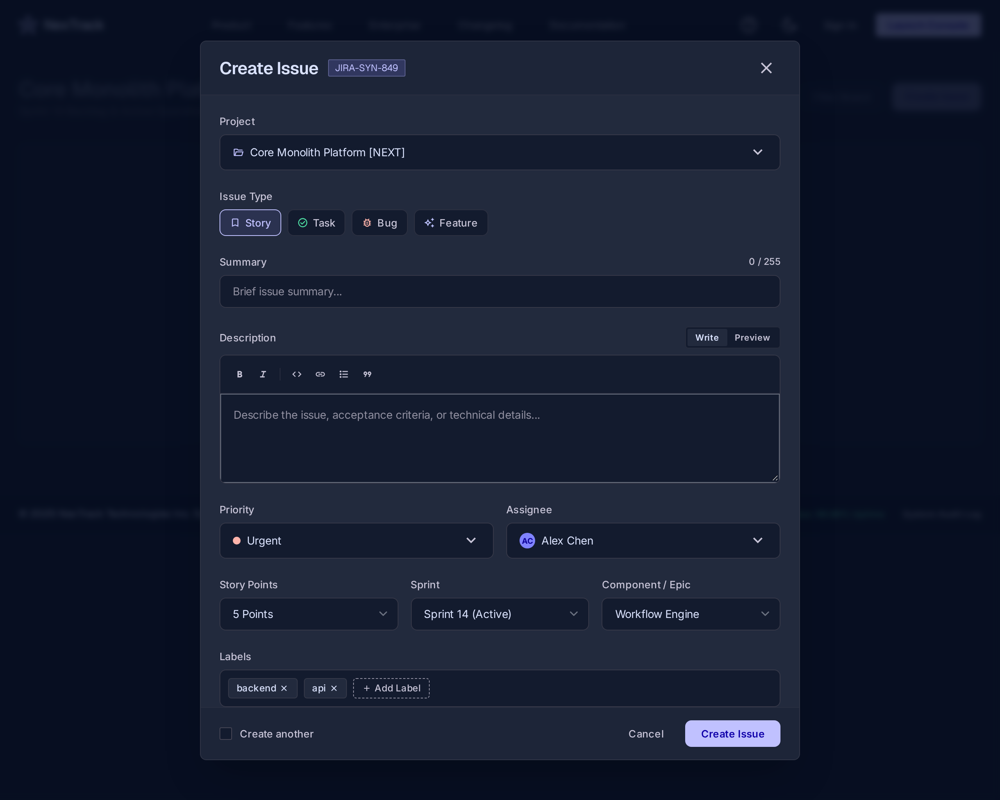
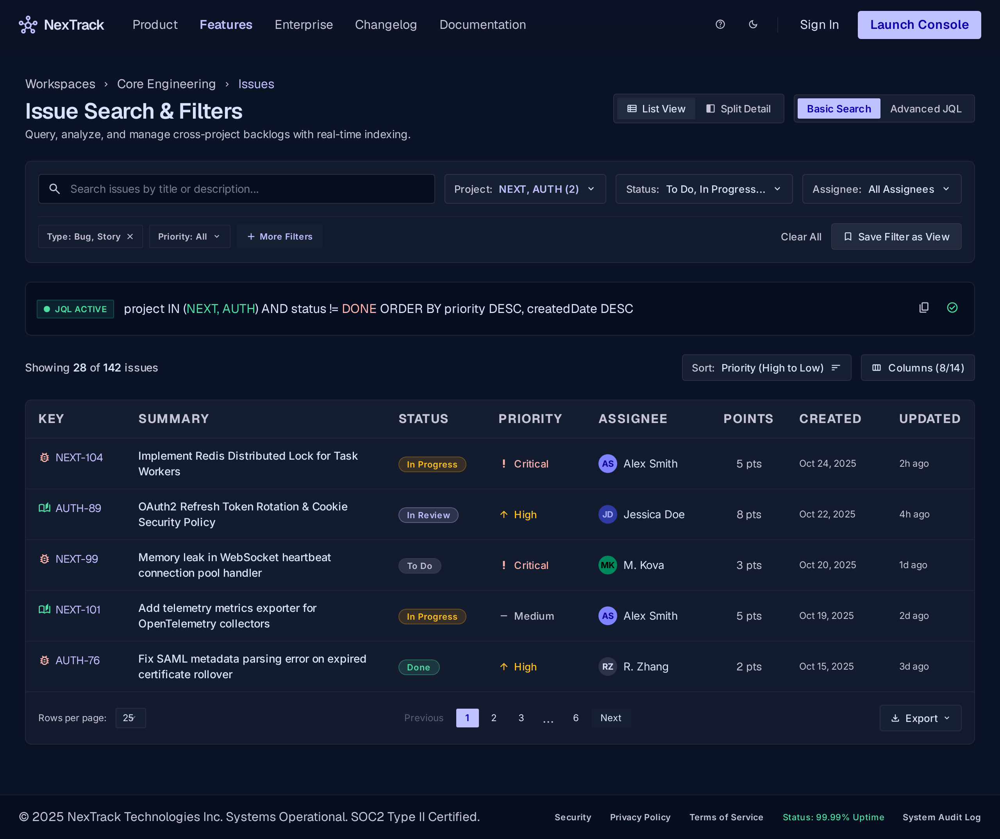
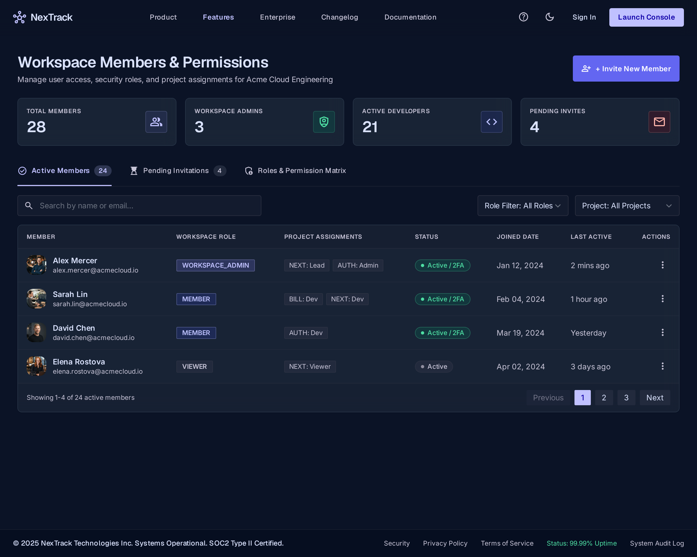
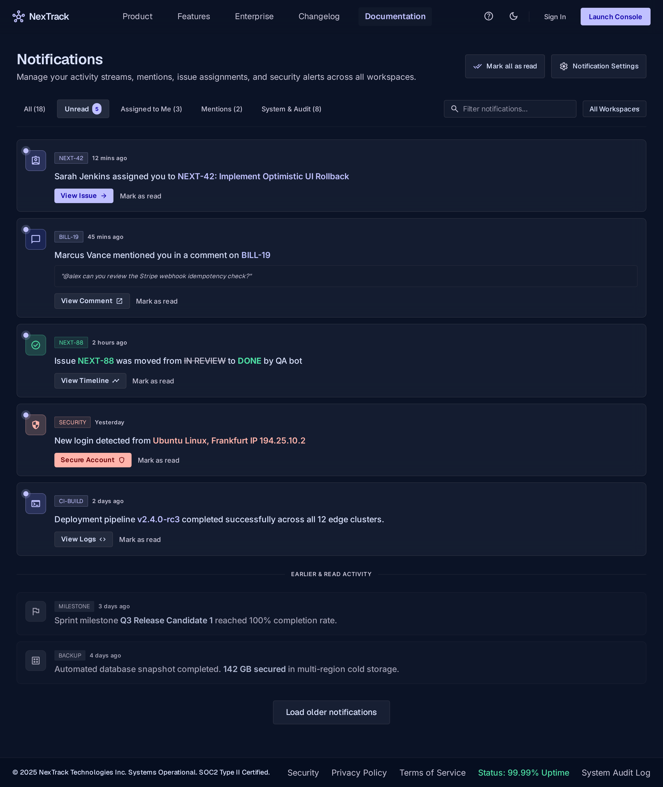
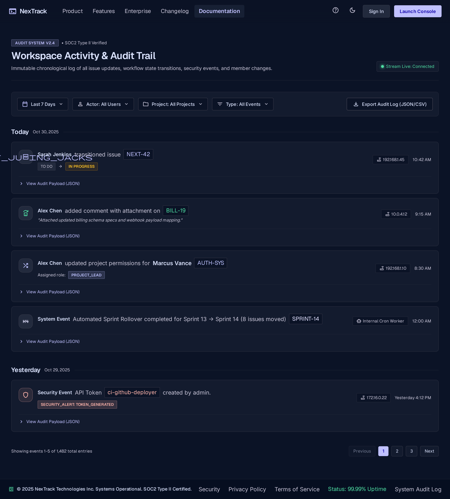

Engineering Portfolio UI Suite
All 10 user interface screens generated via Stitch MCP matching the specification in NexTrack_Project_Architecture.md (Section 13). Features deep indigo/slate theming, responsive grid layouts, realistic Jira-grade state machines, optimistic UI rollback handling, and subtask workflows.
Phase 1: Authentication & Workspace Management
Identity lifecycle, workspace isolation, and multi-tenant overview

Screen 01Login & Registration arrow_forward
Tabbed auth container, 1-click sandbox role logins (Lead & Admin), password indicators, and product feature showcase.

Screen 02Workspace Selector & Overview arrow_forward
Multi-workspace switcher dropdown, project cards grid, sprint velocity KPIs, and Create Workspace modal dialog.
Phase 2: Project Management & Core Board
Project directory, scheme configurations, and Kanban workflow

Screen 03Project List & Settings arrow_forward
Searchable project directory, project key validator, workflow scheme assignment, and archive/delete danger zone.

Screen 04Project Kanban Board arrow_forward
Workflow columns with WIP limits, card priority badges, and optimistic UI rollback conflict simulation toast.
Phase 3: Issue Management & Advanced Search
Issue details, subtasks, creation modal, and JQL query navigator

Screen 05Issue Detail View & Drawer arrow_forward
State transition actions, rich markdown description, subtask checklist, comments timeline, and metadata panel.

Screen 06Create & Edit Issue Modal arrow_forward
Full Jira-grade modal with issue type selector, priority levels, assignee picker, story points, and attachment dropzone.

Screen 07Search & Filter Navigator arrow_forward
Multi-criteria search, JQL advanced query syntax mode, responsive data table with pagination, and CSV/JSON export.
Phase 4: Administration & Audit Trail
Team permissions, notification center, and immutable security audit log

Screen 08Members & Role Management arrow_forward
Role-based access matrix (Admin, Lead, Dev, Viewer), member invitation flyout, and 2FA status tracking.

Screen 09Notifications Center arrow_forward
Real-time alerts, assignment notifications, @mentions, security alerts, and thread archiving controls.

Screen 10Activity & Audit History arrow_forward
Chronological timeline of state transitions, actor IP tracking, resource badges, and expandable JSON payload diff viewer.